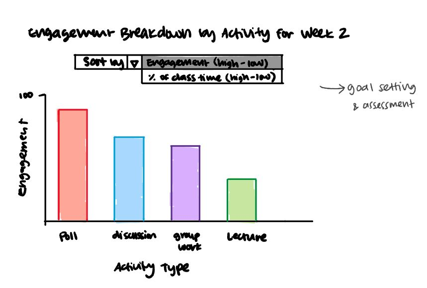

ClassInSight
Improving teacher efficacy through persuasive data visualization design

Team
Dr. Amy Ogan - principal advisor
Franceska Xhakaj - principal investigator
Katrina Hu - research assistant
Amy Luo - research assistant
Introduction
ClassInSight is a project that investigates how smart classrooms can sense in-class activities and provide feedback and training to novice instructors at the college and university level. Currently, the project focuses on helping instructors improve their in-classroom discursive practices, such as asking more content-based questions increase student participation and engagement.
I began working with the ClassInSight team in Fall 2020, after the preliminary classroom data collection and user interviews had taken place. My role in this project was to derive insights from the consolidated data and create informed prototype designs of the final ClassInSight user dashboard.
Data Analysis

We began by doing a thematic analysis of the interviews conducted with the instructors. In the interviews, instructors were shown their nonverbal classroom behavior data, which included data on their relative location within the classroom and their gaze distribution (% of time that they spent looking at students, their device, the board, etc.). These interviews prompted teachers to discuss their assessment of the data, other data that they would like to see, and their goals for improving their nonverbal behaviors in the classroom.
Through our data analysis, we found 4 main insights:
1. Teachers are interested in classroom data.
They want to see data on their own behaviors as well as those of their students in order to understand and explore the link between classroom data and classroom performance.
2. Teachers expressed a desire to improve their nonverbal classroom behaviors.
Providing teachers with better resources and insights is a crucial step in identifying opportunities to improve the educational experience for both the teacher and the student.
3. There are technological, physical, and social barriers that prevent change in the classroom.
Being aware of these obstacles (such as classroom size, furniture, device setup) allows us to tailor our solutions to address each individual teacher's unique classroom challenges.
4. There's a tradeoff between time and training.
We have to find the balance between effective and feasible solutions for behavior change.Initial Data Visualization Designs
With these conclusions in mind, our team began our prototyping phase. We started out by making sketches of potential dashboard elements based on our user interview insights.
This sketch is a "dashboard" of one class session that tracks student vs. teacher engagement over time by classroom activity.
 Left: Gaze breakdowns that represent where students/teachers are looking during class, and for how much of the time.
Left: Gaze breakdowns that represent where students/teachers are looking during class, and for how much of the time.
Right: Interaction trackers that help teachers become more aware of how they interact with students of different demographics.
In my initial sketches, I tried to find different ways to represent the data that we were able to collect from each class session. I wanted these data visualizations to be easily interpretable, particularly in regards to the correlation between teacher behavior and student engagement.
Refining Data Visualization Designs
The ultimate goal of this project is to use ClassInSight's smart classroom data to motivate and persuade teachers to change their nonverbal behaviors in the classroom. Our initial designs were data representations. So now, the question was: how can we use these representations to persuade, motivate, and inform?
 We referenced this flow of synthesizing existing data with motivational theories and goal-oriented insights to facilitate the goal-setting that would ultimately lead to the teachers' desired behavior changes.
We referenced this flow of synthesizing existing data with motivational theories and goal-oriented insights to facilitate the goal-setting that would ultimately lead to the teachers' desired behavior changes.
  These charts explore different perspectives of assessing nonverbal behavior performance, such as engagement vs. students' exam scores, or tracking short-term change vs. long-term change.
These charts explore different perspectives of assessing nonverbal behavior performance, such as engagement vs. students' exam scores, or tracking short-term change vs. long-term change.

 I also played around with different types of visual representations, such as heatmaps/highlights.
I also played around with different types of visual representations, such as heatmaps/highlights.
Some important elements I began to incorporate were insights (on the side), goal-setting mechanisms, and drop-down menus for teachers to select exactly what kind of data was most important to them.
I noticed in some of the user interviews that the data that teachers considered as important metrics for engagement often differed across discipline and course level.
These new designs reflect these needs by offering more flexibility in what data is being viewed and increasing convenience in both performance assessment and goal-setting.
I also went more in depth with some of my previous designs:


 These charts give the teacher a visual breakdown of their class engagement over time. I wanted teachers to easily see the direct imapct how the class engagement changes with certain behaviors, such as changing the class activity, making eye contact, or shifting their location.
These charts give the teacher a visual breakdown of their class engagement over time. I wanted teachers to easily see the direct imapct how the class engagement changes with certain behaviors, such as changing the class activity, making eye contact, or shifting their location.